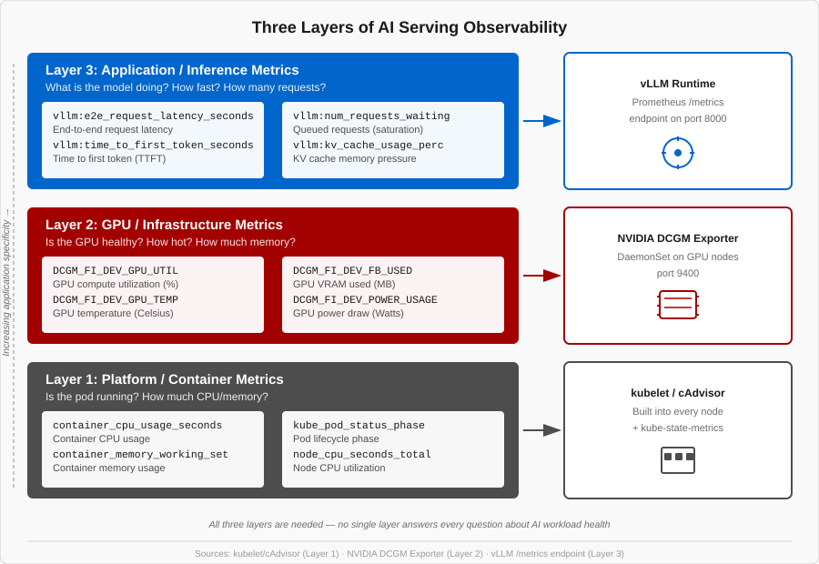

Three Layers of AI Serving Observability
The Three-Layer Model
AI serving observability has three layers. You need all three to understand what is happening with your model serving workloads.

| Layer | Name | Metrics | Source |
|---|---|---|---|
Layer 3 |
Application / Inference |
TTFT, TPOT, E2E latency, token throughput, queue depth, KV cache usage |
vLLM runtime |
Layer 2 |
Infrastructure / GPU |
GPU utilization %, GPU temperature, GPU memory (used/free), GPU power draw |
NVIDIA DCGM Exporter (DaemonSet on every GPU node) |
Layer 1 |
Platform / Container |
CPU usage, container memory, pod restarts, pod status |
kubelet / cAdvisor (always available in OpenShift) |
Each layer answers a different question:
-
Layer 1 answers: "Are the pods running?"
-
Layer 2 answers: "Is the hardware healthy?"
-
Layer 3 answers: "Is the model performing well for users?"
Why You Need All Three Layers
Scenario A: Layer 1 Only (Container Metrics)
You see the pod is Running, CPU at 10%, container memory at 4GB. Everything looks healthy. But users report 20-second response times.
What is wrong? You have no idea — you cannot see GPU utilization (Layer 2) or inference queue depth (Layer 3). The GPU might be thermally throttling, or the KV cache might be full. Container metrics cannot tell you.
Scenario B: Layer 2 Only (GPU Metrics)
You see GPU utilization at 95%. Is this good or bad?
It depends.
If num_requests_waiting (Layer 3) is 0, the GPU is efficiently utilized — that is great.
If num_requests_waiting is 50, the GPU is overwhelmed and users are suffering.
GPU metrics alone cannot distinguish "healthy busy" from "drowning."
Scenario C: Layer 3 Only (Inference Metrics)
You see TTFT (Time to First Token) has spiked to 10 seconds. Why?
Maybe the GPU is thermal-throttling and running at reduced clock speed (Layer 2). Maybe the pod was OOM-killed and is restarting (Layer 1). Maybe a burst of long-prompt requests filled the KV cache (a combination of Layer 2 and Layer 3). Inference metrics tell you the symptom but not the root cause.
Key Takeaway
Each layer answers a different question. Together, they give you the full picture. By the end of this course, you will have dashboards and alerts covering all three layers.